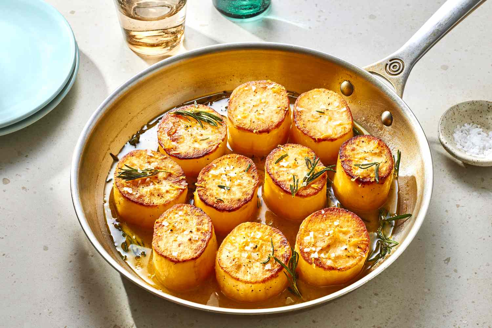

Fondant Potatoes

Description
This is an amazing buttery potato dish. You can pop them in your mouth like a little treat.
Ingredients
- 4 medium russet potatoes (about 1 ½ pounds total)
- 3 cloves garlic
- 4 Tbs unsalted butter
- ½ tsp kosher salt
- ½ tsp freshly ground black pepper
- 2 Tbs canola oil
- 4 sprigs fresh thyme, plus more for garnish
- ¾ cup low-sodium vegetable or chicken broth
Instructions
- Peel 4 russet potatoes. Trim the ends, then cut each potato in half crosswise. You should now have 8 flat potato rounds. Place the potatoes in a large bowl and cover with cold water. Let sit for 20 minutes at room temperature to remove excess potato starch. Meanwhile, heat the oven and prepare the garlic and butter.
- Arrange a rack in the middle of the oven and heat the oven to 400°F. Lightly smash and peel 3 garlic cloves. Cut 4 tablespoons unsalted butter into 8 pieces.
- Drain the potatoes, rinse with cold water, and pat dry with paper towels. Season the potatoes with 1/2 teaspoon kosher salt and 1/2 teaspoon black pepper.
- Heat 2 tablespoons canola oil in a large oven-safe skillet over medium-high heat until shimmering. Add the potatoes cut-side down in a single layer and cook until golden brown, 6 to 7 minutes. Flip the potatoes using tongs and add the garlic, butter, and 4 sprigs thyme. (If the potatoes are sticking to the pan, let them cook 2 to 3 minutes more until they easily release before flipping.) Cook until the butter is foaming and starts to brown, 2 to 3 minutes more. Add 3/4 cup vegetable or chicken broth.
- In a large, deep pan, heat ½ an ich of vegetable oil over medium heat
- Bake until the potatoes are fork tender and lightly browned on the sides, 30 to 35 minutes. Garnish with more whole thyme sprigs before serving, drizzled with the pan juices.